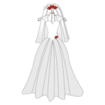

Women’s Clothing Names with Clothes Pictures
Do you know all names of women’s clothing in English?

There are a lot of different clothes names for women, and sometimes it can be hard to know what to call a piece of clothing. That’s why we’ve put together a list of all the women’s clothes names in English with pictures, so you can easily find what you’re looking for! So whether you’re shopping for clothes or just trying to get to know the vocabulary of types of women’s clothing, read on!
Women’s clothes are articles of clothing designed for and worn by women. Typical women’s clothes include skirts, dresses, shirts, sweaters, trousers, coats, chemises, and jeans.
Some articles of clothing and geared specifically towards women, but most of the items are the same as items of men’s clothing. The difference is that the clothes are designed to fit women and sold in a separate range from the men’s clothes.
Women had different kinds of clothes. Skirts, dresses and high-heeled shoes are usually seen as women’s clothes in English.
1. Clothes
Return to top
Clothing is anything that you wear on your body. This can include clothes that are made from fabric, such as shirts and pants, or it can also include items like shoes and hats, etc. Furthermore, clothing may be symbolic (such as religious robes), or it may protect against the elements (such as rain gear).
Wedding dress
Her wedding dress was absolutely exquisite.
A wedding dress is an item of particular clothing worn on special occasions, such as weddings. It consists of an outer gown made from several layers of fabric and a fitted bodice or top.

Sweater
The new sweater was a tight fit.
A sweater is a clothing article that may be sleeves and a neckline. It can be made from various fabrics, including wool, cashmere, or cotton.
T-shirt
$70 for a T-shirt! What a rip-off!
A t-shirt (also known as a tee, T-shirt, or shirt) is an article of clothing that covers the upper body. It is usually made from textile and worn on the torso.
Sheath dress
Sheath dresses will be worn under coats and jackets.
Dress
I will not wear this dress if you object to it.

Gym clothes
Susan’s gym clothes did not fit her very well.
Gym clothes are clothing that is designed specifically for the gym. They normally consist of tight-fitting pants and a shirt that helps to prevent sweat from getting visibility on your skin.
Bra
You need a new bra.
A bra is an article of clothing worn to support and shape the breasts. It consists of the upper part (the cups) and the lower part (the band). The purpose of a bra is to provide comfort and stability during daily activities by helping to keep the breasts in their correct position.
Tank top
A tank top is perfectly suitable for dining in a fancy restaurant.
A tank top is a type of clothing consisting of a sheer or lightweight fabric Shirt, sleeveless, with open armholes and short sleeves.
Shorts
She was dressed casually in shorts and a T-shirt.
Shorts are a type of clothing worn as part of casual attire, and they can be stylishly paired with t-shirts, tank tops, crop tops, blouses…you get the idea!
Hoodie
My sister wears her lovely hoodie every day.
A hoodie is a thick, warm sweatshirt usually made of fleece and has a zip-up front. It can be casual or more formal, depending on the style.
Jeans
Jeans are popular among the young.
Jeans are a type of clothing that is made from denim fabric. Jeans are usually blue, black, or dark brown and are designed to be worn stretchy and tight-fitting. They can be used for both casual wear and formal occasions.
Jacket
She’s only wearing a thin summer jacket.
A jacket is a coat or other heavy garment you wear over your clothing in cold weather. It is normally made of wool, cashmere, or other warm fibers and has a collar, cuffs, and waistband.
Long coat
I hate this long coat.
Uniform
I don’t like the color of our uniform.
A uniform is any clothing, accessories, or other items that all employees at a company must wear. This type of attire helps improve the appearance of the organization and provides a sense of cohesion and community.
Coat
I bought a coat, shoes and a new wallet.
A coat is a piece of clothing conventionally worn over other clothes. They can also make you look smarter or more formal than usual.
Dress pants
She wears a jacket and dress pants, not a robe.
Swimsuit
She was a good swimmer in her swimsuit.
A swimsuit is an item of clothing worn primarily for swimming, sunbathing, or other aquatic activities.
Long-sleeve top
Emma has already bought a long-sleeve top.
A long-sleeve top is a shirt that goes down to your knees or lower. It is made from a stretchy fabric, allowing freedom of movement and ease of dressing.
Skirt
The skirt was below fourty dollars.
A skirt is a type of clothing that covers the hips and legs. It has a fabric panel that hangs down in the back or front, and it may be gathered at the waist or ankles.
Thong
Women felt a thong was too revealing to wear in public.
Stockings
She has lost a pair of stockings 😱
Stockings are lingerie that covers the leg from ankle to hip. They have an open crotch and lace-up at the side or front.
3. Accessories
Return to top
Hat
I recognized Mary by her hat.
A hat is a clothing item made from cloth, felt, straw, or plastic and worn on the head. Hats are used for protection from the weather, as well as to enhance social status.
Necklace
My husband gave me a $ 25, 000 necklace.
A necklace is a piece of jewelry worn around the neck and has multiple strands of beads or charms attached to it.
Ring
She selected a gold ring.
Earrings
She wore a pair of earrings.
Earrings are a type of jewelry that consists of one or more small metal objects attached to the ear by a cord, wire, or other material.
Perfume
I can smell your perfume a mile away.
Mittens
I think I need a pair of mittens.
Mittens are a type of glove that is worn for extra warmth. They have two layers of fabric, with the inner layer being made from wool or fleece and the outer layer being made from leather or other waterproof material.
Sunglasses
Her sunglasses had fallen into the pond.
Sunglasses are a type of eyewear that help to protect your eyes from the sun’s harmful rays.
Handbag
The girl bought a nice handbag.
A handbag is a reusable bag made of natural materials that can be used to carry groceries, gym clothes, or any other supplies you might need on your daily commute.
Bracelet
The bracelet is very beautiful.
Purse
The lady put her wallet in her purse.
Umbrella
She let down her umbrella and furled it.
Scarf
She unwound the scarf from her neck.
A scarf is a fabric worn around the neck or head as a fashion accessory. Some people wear their scarves as part of their daily routine to stay warm and comfortable all day long!